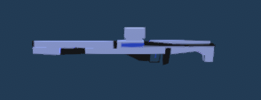

Crosspoint Progression
Last updated 8/18
What Crosspoint Is
Crosspoint a fps shooter with cool powerups and many optional settings. You can control the time, dash, have a 360 view. You want I will create.

Laser Rifle
The Laser Rifle was actually my second gun model. I was very inspired by futuristic guns so I made a laser rifle. The laser rifle does 15 damage and has 30 ammo in its magmazine.
Laser Sniper
The Laser Sniper is a strong weapon dealing 150 damage! The weapon was inspired by a futuristic railgun. Be careful when using tho it only has one shot.